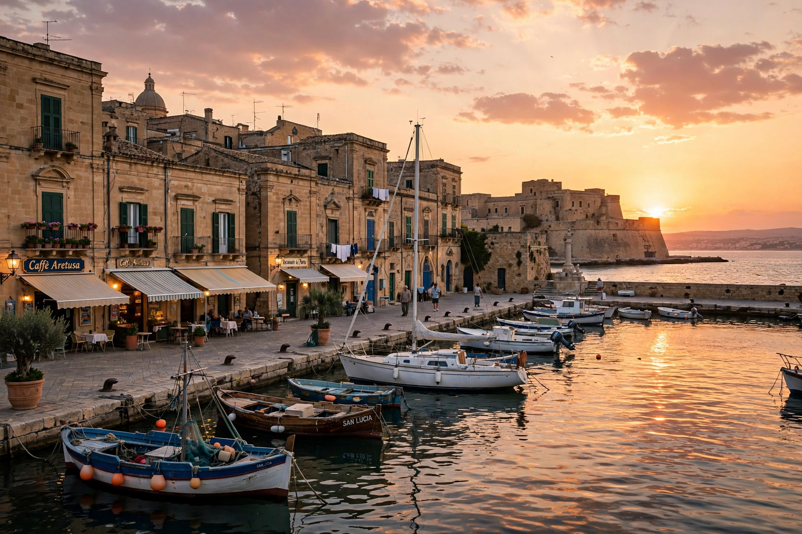

Syracuse (Italian: Siracusa; Sicilian: Sarausa) is a city on the Ionian coast of Sicily, Italy, the capital of the province of Syracuse, with a population of about 116,000. Founded by Greek settlers from Corinth in 734 BC, it became the most powerful city of the Greek West, a great rival of Athens and Carthage, and the home of Archimedes. Its historic centre, the island of Ortygia, together with the Necropolis of Pantalica, is a UNESCO World Heritage Site.
| Syracuse | |
|---|---|
 Ortygia, the ancient heart of Syracuse. | |
| Country | Italy |
| Region | Sicily |
| Founded | 734 BC (by Corinthian Greeks) |
| Population | ~116,000 (city) |
| Patron saint | Saint Lucy (Santa Lucia) |
Syracuse was founded by Archias of Corinth on the island of Ortygia and rapidly grew to dominate eastern Sicily, founding colonies of its own. Under the tyrant Gelon it defeated the Carthaginians at the Battle of Himera (480 BC); under Hieron I it was a brilliant court visited by Aeschylus and Pindar. The city famously repelled the great Athenian expedition of 415–413 BC (see Nicias), the turning point of the Peloponnesian War. Dionysius I made Syracuse the strongest power in the Greek world in the early fourth century BC. Its most famous citizen, the mathematician and engineer Archimedes, devised war machines for its defence in the Second Punic War but was killed when the Romans under Marcellus stormed the city in 212 BC.
Syracuse declined under Roman, Vandal, and Byzantine rule, serving as capital of Byzantine Sicily and briefly, in 663–668, as the imperial capital of Constans II. It fell to the Arabs in 878 after a long siege, and was taken by the Normans in 1085. Devastated by the great earthquake of 1693, it was rebuilt in the Sicilian Baroque style visible today in Ortygia's cathedral — built into the columns of the ancient Temple of Athena — and its palaces. The modern city expanded onto the mainland, around the ancient quarters of Tyche and Neapolis, where the Greek theatre and the Roman amphitheatre survive.
Principal sights include the cathedral on Ortygia, the Fountain of Arethusa, the Ear of Dionysius (a limestone quarry cave in the Latomia), the Greek theatre (scene of annual classical drama festivals), the Paolo Orsi archaeological museum, and the catacombs of San Giovanni. Saint Lucy, martyred in Syracuse in 304, is the city's patron.